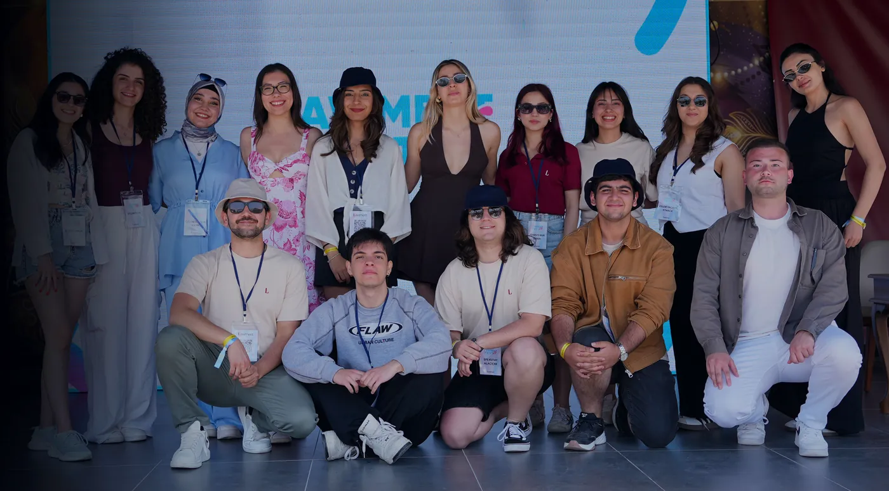

Katıl
Lawment'e üç yoldan dahil olabilirsin: etkinliklere katılarak, gönüllü olarak ekibe girerek ya da konuşmacı ve mentor olarak deneyimini paylaşarak.
Katılım yolları
Katılımcı
Etkinliklere gel.
Lawment Fest, Comparena ve Back in Lawment başvuruları Instagram'da duyuruluyor. Hukuk öğrencisi ya da genç hukukçuysan hepsi senin için.
Duyuruları takip etGönüllü
Ekibe gir.
Beş departmandan birinde etkinlikleri birlikte kuralım. Gönüllülük; organizasyon, iletişim ve kurumsal ilişkilerde gerçek deneyim demek.
Başvuru formuKonuşmacı ve mentor
Deneyimini paylaş.
Avukat, akademisyen ya da şirket hukukçusuysan panellerde, atölyelerde ve yarışma jürilerinde yer alabilirsin.
Bize yaz02 / Departmanlar
Nerede çalışmak istersin?
Her gönüllü bir departmanda yer alır. Bir etkinlik, beş departmanın birlikte yürüttüğü ortak iştir.
Kurumsal İlişkiler
Sponsor ve paydaş görüşmeleri, iş birliği dosyaları, kurumlarla ilişki yönetimi.
14 kişiÜye Gelişim
Yeni üyelerin uyumu, eğitimler, üyelerin gelişim ve katılım programları.
8 kişiProje ve İnovasyon
Etkinlik içerikleri, yarışma kurguları, yeni format fikirleri.
11 kişiDijital İletişim
Instagram ve LinkedIn içerikleri, tasarım, web sitesi ve tanıtım.
8 kişiYasal ve Finans
Sözleşmeler, bütçe takibi, dernek mevzuatına uyum ve resmî yazışmalar.
2 kişi03 / Başvuru
Başvuru formu
Formu gönderdiğinde Üye Gelişim ekibimiz seninle iletişime geçer. Konuşmacı ya da mentor olmak istiyorsan bunu notlara yazman yeterli.
